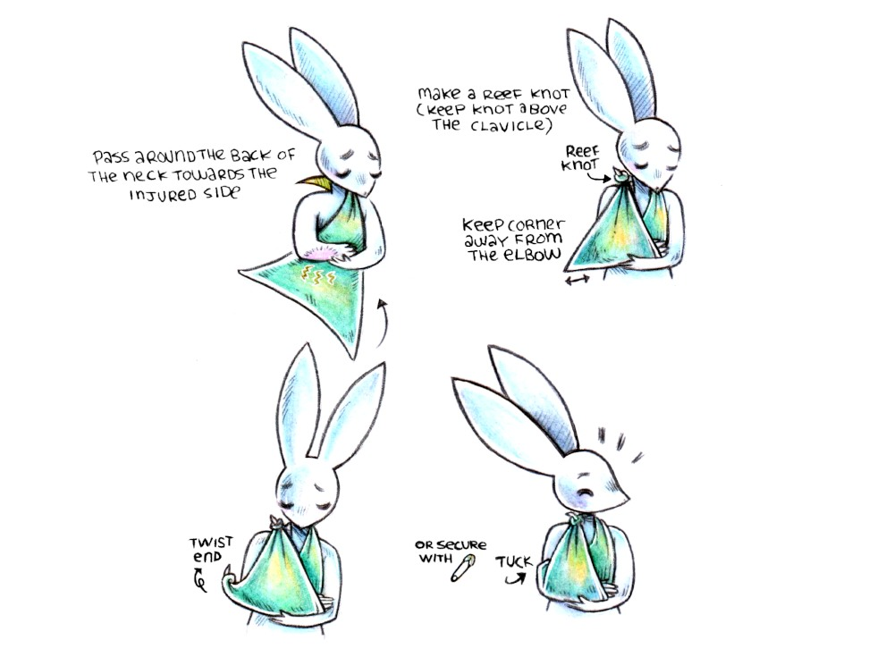

Triangular bandages are used to make slings and to make broad bandages to keep splints in place.
There are two ways to tur a triangular bandage into a sling:
Arm Sling
An arm sling is horizontal (or slightly raised), it is used to treat upper arm injuries, wrist injuries, rib fractures, etc.

Pass around the back of the neck towards the injured side. Make a reef knot(keep knot above the clavicle). Keep corner away from the elbow. Twist end of corner, and tuck(or secure with a safety pin).
Elevation Sling
An elevation sling helps to control hand and arm bleeding, and helps to reduce swelling.
Reef knot & tuck ends around knot.
How to tie a reef knot
How to tie a reef knot (square knot).
Triangular bandages are used to make slings and to make broad bandages to keep splints in place.
How to fold a triangular bandage into a broad or narrow bandage